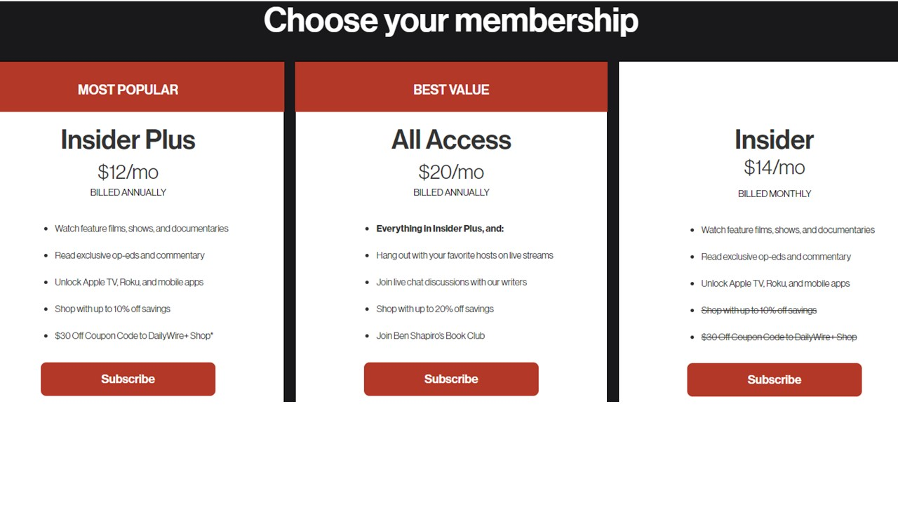
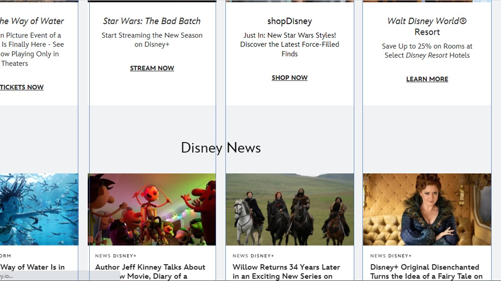
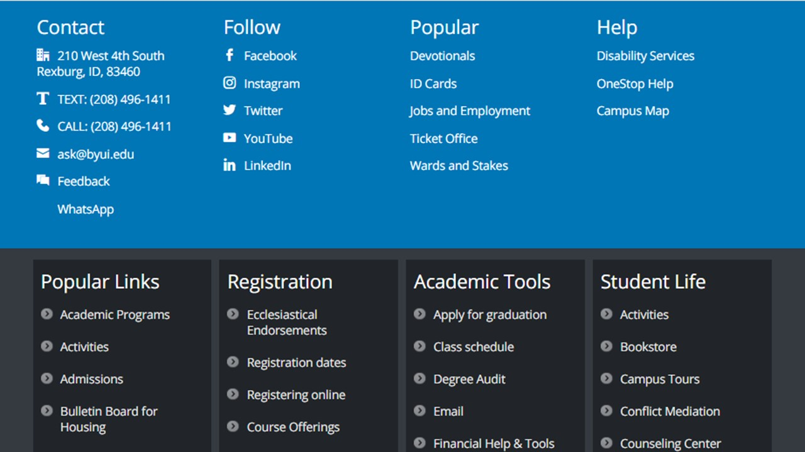

Repetition
The Daily Wire
Each of the boxes are formatted the same and show repetition through things like where the price points are.
Alignment
Disney
The disney website has strong alignment and I was able to draw a straight line from each box to the box below it.
BYU-Idaho
Company
Text colors are easy to read because of the contrast and when a new section starts, a new color that also works with the text but contrasts enough to add depth to the post.